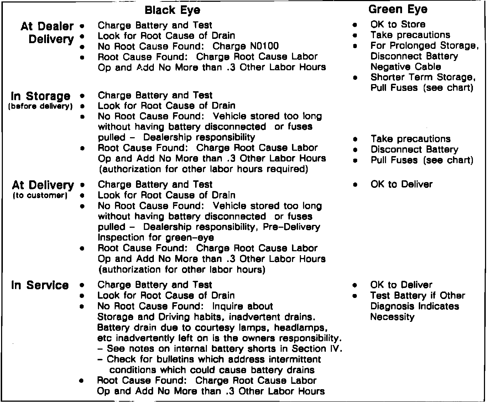

II. Warranty Policy
Following proper testing and parasitic diagnosis procedures are in the best interests of the dealership in light of Warranty Policies and procedures outlined in DSIB 89-I-9. This bulletin states that Labor Operation N0100, "Battery charge and test", is to be used only in case of new vehicles received from the carrier with a discharged or "Dark Eye" battery. Recharge and/or replacement of new vehicle batteries on unsold cars in dealer inventory are the responsibility of the dealership.FIGURE 2 - WARRANTY PROCEDURE UNDER VARIOUS CONDITIONS:

If a condition of discharged battery is a customer concern on a delivered vehicle, the root cause of the discharge should be diagnosed and repaired before the battery is charged and tested. Battery charge and test on delivered vehicles is to be submitted for approval at no more than 0.3 "Other Labor Hours" and is to accompany the repair operation that corrects the root cause of the discharge. Refer to Figure 2 on the next page.